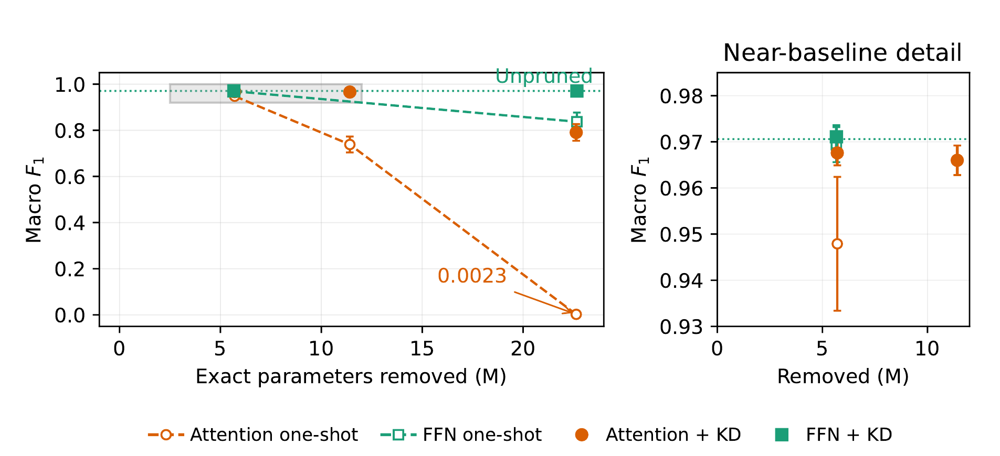

Making an audio transformer smaller and faster, without losing accuracy
I took an 86M-parameter audio classification transformer and cut it down with structured pruning and knowledge distillation. It ended up 26% smaller and 15.6% faster on a T4 GPU, with no measurable drop in accuracy.
| ROLE | First author: design, experiments, and writing |
|---|---|
| STACK | PyTorch, Hugging Face Transformers |
| DATA | 30,388 clips, 40 classes, built from 4 public audio sources |
| LINKS | code on GitHub |
WHAT I FOUND
Attention layers only look harder to prune. They hold half as many parameters as the feed-forward layers, so the same cut hits them harder. Pruning equal shares of each layer’s capacity, both recovered about equally well: 0.966 vs. 0.970 F1.
Zeroing weights isn’t a speedup. The model only got faster once I physically rebuilt the smaller layers, and I checked that the rebuilt model made exactly the same predictions as before.
HOW I BUILT IT
A clean dataset first. I merged 4 public audio sources into 40 unified classes, removed duplicates, and made train, validation, and test splits with no leakage.
A study I’d trust. The main comparison ran across 3 training seeds and 4 control conditions, with paired bootstrap confidence intervals on each comparison and a five-fold replication on a second dataset (ESC-50).
